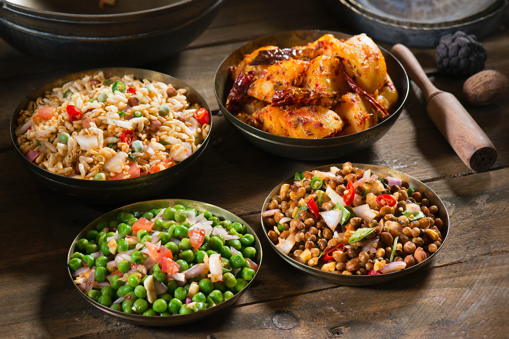
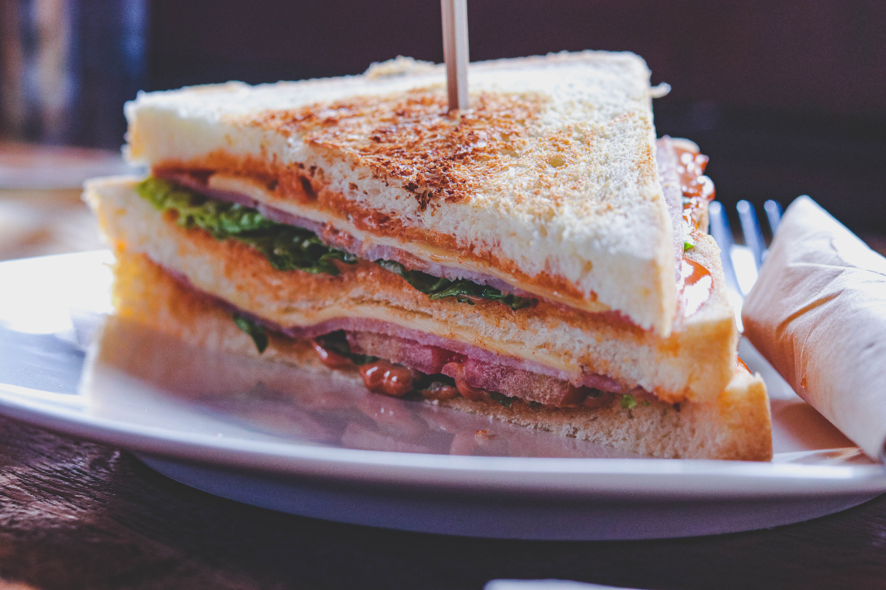

YUMMY FOODS
Food has always been like a religion when it comes to Indore and Indories are true devotees of taste. Being the city of foodies, people of Indore are particularly acceptable about their choices of food. And for that very reason, food-trends keep on changing rapidly and perhaps have changed to a veritable context. From traditional meals to global cuisines; from long cooked meals
to instant - ready food, from fresh fruit juices to coffees & shakes and an endless list rolls down when we make a count. Talking about food trends, lets catch up the hottest food trends of the city.
Rice is great if you're really hungry and want to eat two thousand of something

I wake up some mornings and sit and have my coffee and look out at my beautiful garden, and I go, ’Remember how good this is. Because you can lose it.

A Panda walks into a cafe. He orders a sandwich, eats it, then draws a gun and fires two shots into the air. "Why?" asks the confused waiter, as the panda makes toward the exit. The panda produces a badly punctuated wildlife annual and tosses it over his shoulder. "I'm a Panda," he says, at the door. "Look it up." The waiter turns to the relevant entry, and, sure enough,
finds an explanation. Panda. Large black and white bear-like mammal, native to China. Eats, shoots and leaves